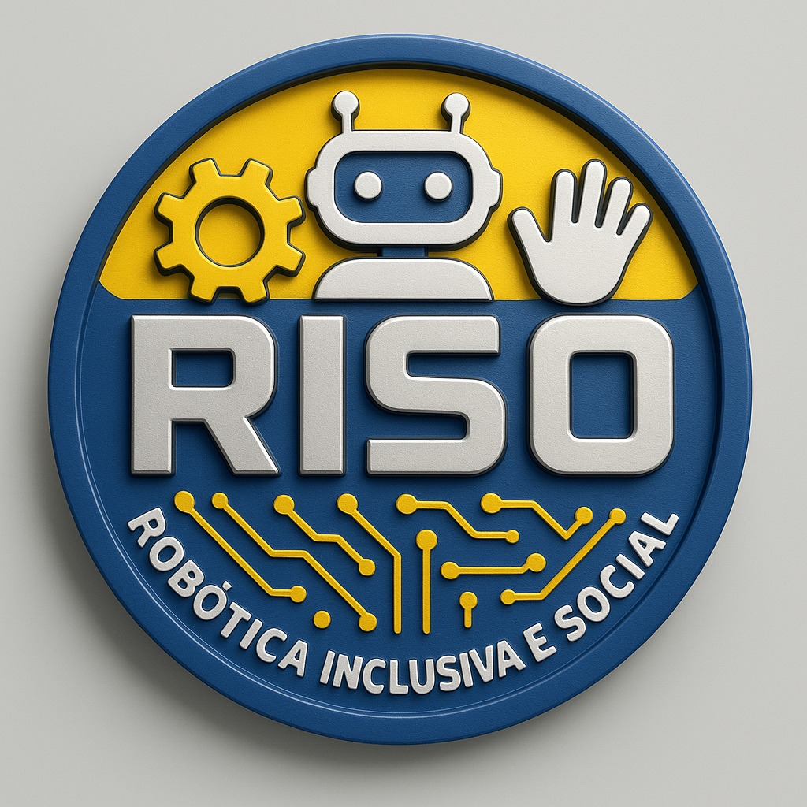

Arthur Eduardo Porfirio Parra
Idade: 15 anos | 1º ano. Gosto de estudar matemática e robótica. Meus objetivos incluem estudar, trabalhar e morar fora do país.
Currículo Lattes

Bem-vindo(a) ao nosso portal!
Criado em 2024 no Colégio Estadual Manoel Antônio Gomes, em Reserva, o clube RISO significa Robótica Inclusiva e Social Transformando Vidas. Nosso objetivo é promover a inclusão através da tecnologia.
Idade: 15 anos | 1º ano. Gosto de estudar matemática e robótica. Meus objetivos incluem estudar, trabalhar e morar fora do país.
Currículo Lattes
Idade: 16 anos | 2ºB. Adoro aprender como o mundo funciona e descobrir coisas novas. Quero me formar em engenharia mecatrônica.
Currículo Lattes
Idade: 17 anos | 3ºB. Tenho interesse na área musical e tecnológica. Minha meta é ser um mecânico de motos excelente.
Currículo Lattes